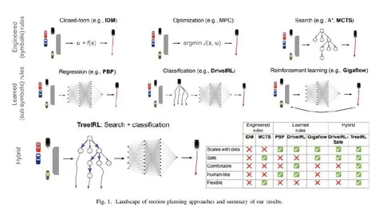

Сегодня разберём статью, в которой авторы предлагают использовать поиск монте-карло по дереву (Monte-Carlo Tree Search, MCTS) для задачи планирования. Как и в обычном MCTS, сначала генерируется множество траекторий, а затем на каждом шаге поддерживается баланс между перспективными направлениями и теми, которые ещё не исследованы.
Перспективность направления определяется функцией награды, учитывающей несколько факторов:
Исследователи генерируют всего 400 траекторий и выбирают из них 100 наиболее перспективных кандидатов по награде. Отобранные траектории удовлетворяют формальным требованиям, однако не все из них применимы в реальности.
Для решения этой проблемы авторы обучают отдельную модель на inverse reinforcement learning. Её задача — дать скалярное значение z, которое позволит из представленных траекторий выбрать наиболее «человекоподобную». При обучении используется таргет exp(z_i)/sum_z(exp(z)) — подходящая траектория определяется по подобию в L2-норме. В итоге из 100 траекторий-кандидатов остаётся только одна, лучшая по IRL-оценке. Она удовлетворяет формальным критериям и похожа на то, как водил бы человек.
Этот метод отличается от обычного подхода, где сначала нейросеть генерирует несколько траекторий, а потом их проверяют на формальную безопасность. Это свежий взгляд, но, к сожалению, остаётся неочевидным, насколько хорошо он масштабируется: подход тестировался как адаптивный круиз-контроль, и модель предсказывала только продольные рывки. С этим ограничением мы имеем всего 5 возможных действий против, например, 169 в другом популярном методе, MotionLM. Количество возможных деревьев в таком случае астрономически меньше — 390 тысяч против 600 квадриллионов.
Что касается результатов работы модели, то в категории адаптивного круиз-контроля на бенчмарке nuPlan TreeIRL показала себя весьма хорошо. Модель также применялась на дорогах общего пользования и смогла проехать 400 км без вмешательств.
Разбор подготовил
404 driver not found
